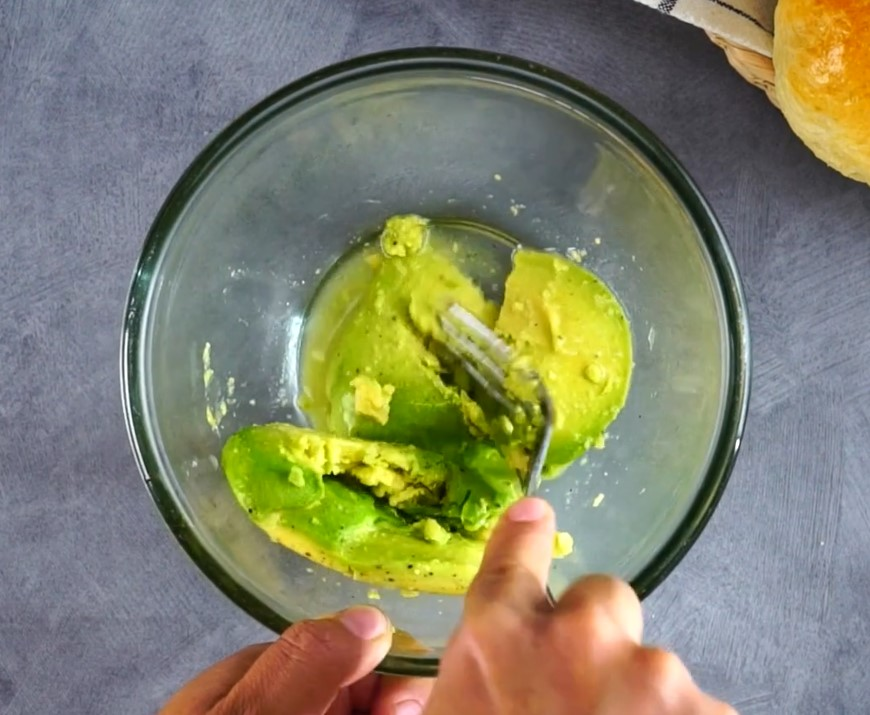
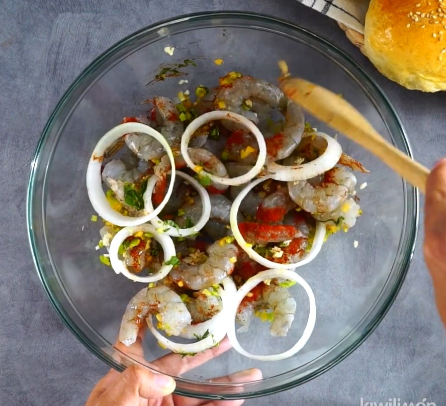
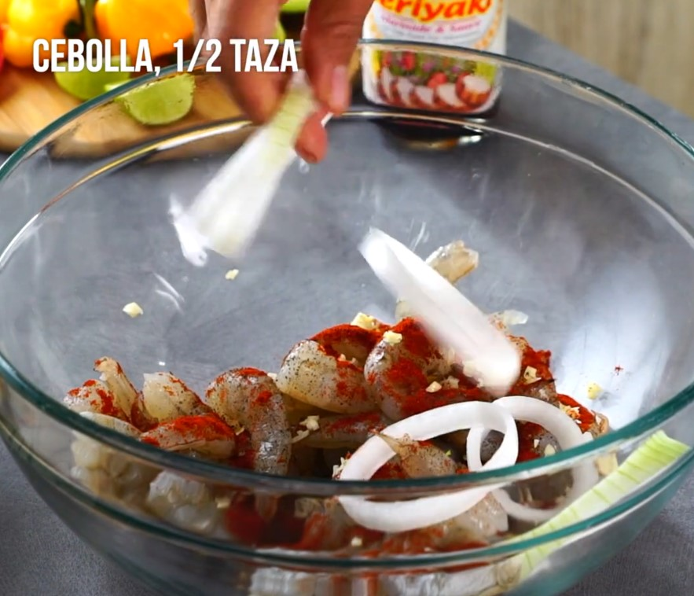
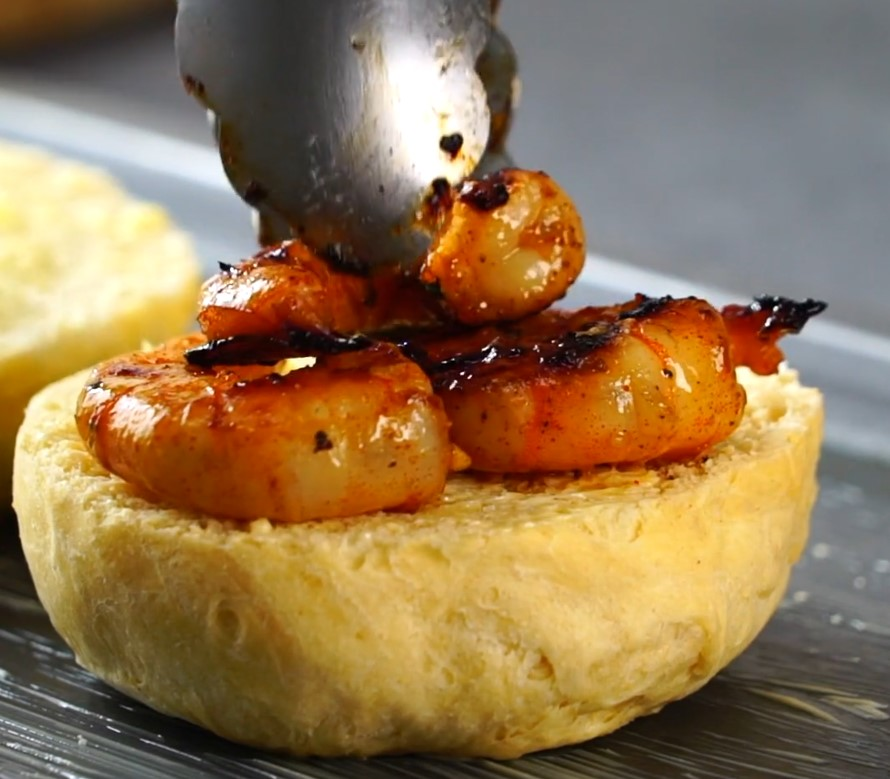
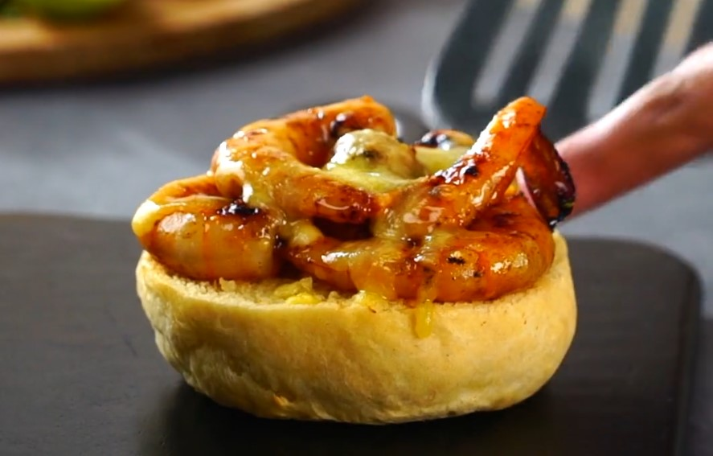
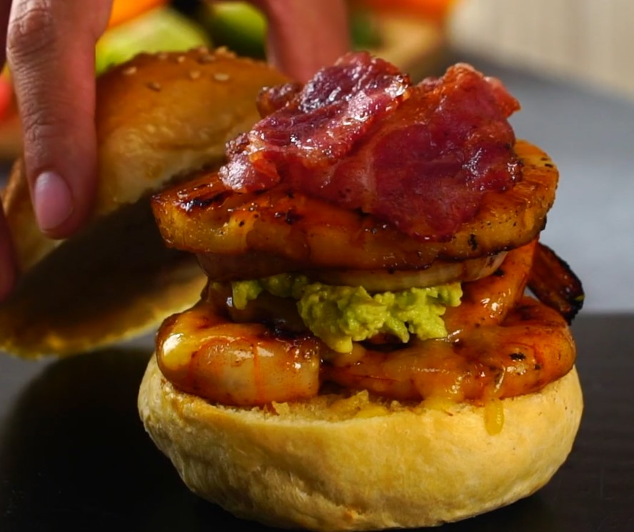
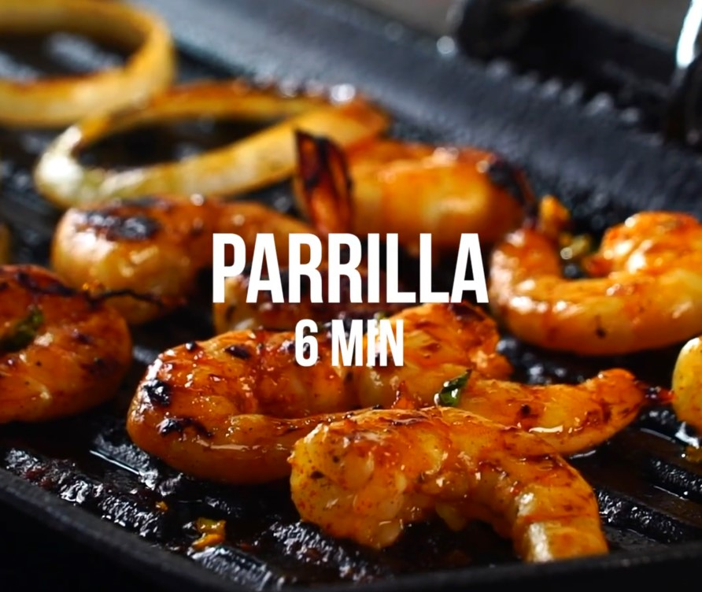

Recetas
Hamburguesa de camarón con piña







Ideal para un día de parrillada, esta hamburguesa de camarón tiene un delicioso sabor a teriyaki. Para
prepararla, sigue el paso a paso de nuestra receta para marinar los camarones frescos con salsa teriyaki
Kikkoman® baja en sodio, pimienta, paprika, chile habanero y un toque de miel. Disfruta en días de verano y no
olvides acompañarla con aguacate.
Ingredientes
- 1 aguacate, (sólo pulpa)
- 3 cucharadas de jugo de limón
- al gusto de sal
- al gusto de pimienta
- 2 tazas de camarón, limpios y sin carcaza
- suficiente de pimienta, para marinar
- 1 cucharadita de paprika, para marinar
- 2 cucharadas de ajo, finamente picado, para marinar
- 1/2 tazas de cebolla, en aros, para marinar
- 2 chiles habaneros, finamente picado, para marinar
- 1 cucharada de miel, para marinar
- 1 cucharada de hierbabuena, finamente picada, para marinar
- 1 1/2 tazas de Salsa Teriyaki
- 2 cucharadas de aceite de ajonjolí, para parrillar
- 4 rebanadas de piña
- suficiente de mantequilla, para asar
- 4 panes para hamburguesa
- 1 taza de queso manchego, rallado
- 2 tazas de tocino, en tiras y frito
- suficiente de tomate, para acompañar
- suficiente de lechuga, para acompañar
- suficiente de papa frita, gajo, para acompañar
Preparacion:
- En un recipiente coloca el aguacate con el jugo de limón, sazona con sal y pimienta y presiona con una
cuchara hasta obtener un puré. Reserva.
- Mezcla los camarones limpios con la pimienta y la paprika uniformemente. Añade el ajo, la cebolla, el chile
habanero, la miel, la hierbabuena y la Salsa Teriyaki. Incorpora los
ingredientes y marina por 10 minutos en refrigeración.
- Vierte el aceite de ajonjolí sobre una sartén parrilla caliente. Coloca los camarones marinados junto con la
cebolla en aros, cocina por 6 minutos y reserva.
- Parrilla las rebanadas de piña por ambos lados en el mismo sartén caliente. Reserva.
- Coloca las bases del pan para hamburguesa sobre una charola engrasada, baña con mantequilla y coloca los
camarones cocidos, cubre con queso rallado y gratina por 10 minutos en el horno, a 180 °C.
- Arma tu hamburguesa. Coloca el puré de aguacate sobre el camarón con queso gratinado; añade la cebolla, la
piña y el tocino frito ; tapa. Sirve con lechuga, jitomate y papas gajo. ¡Disfruta!
Tomado de: https://www.kiwilimon.com/
Volver a la Hoja de vida